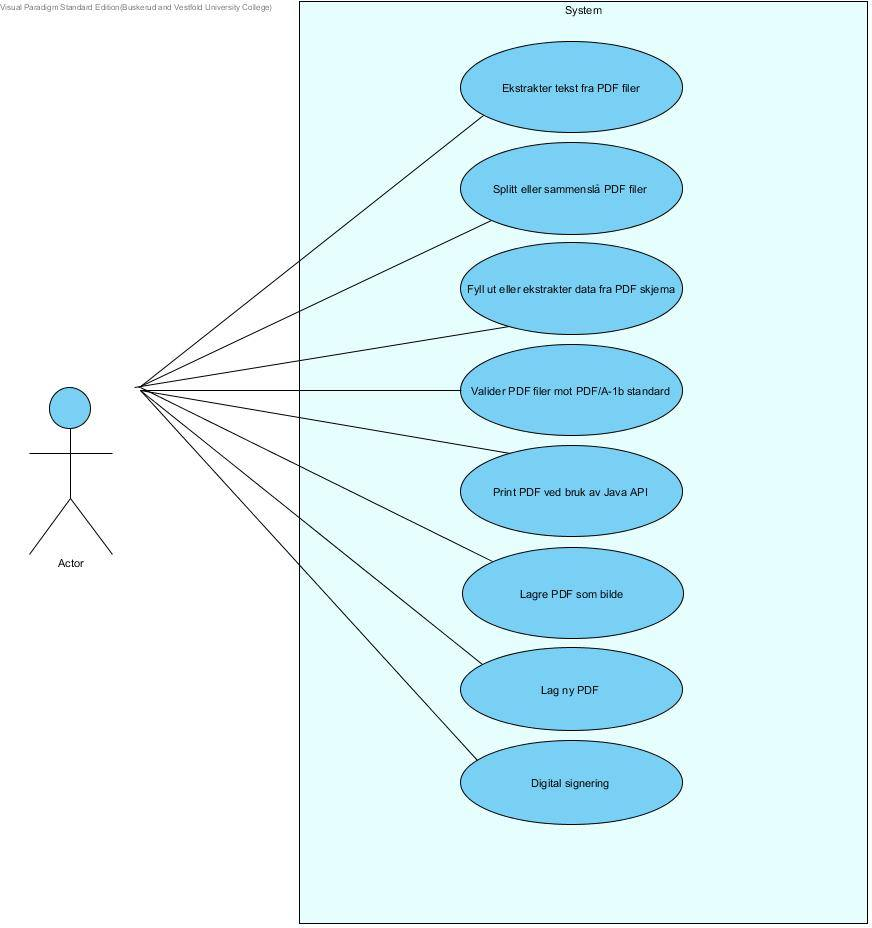
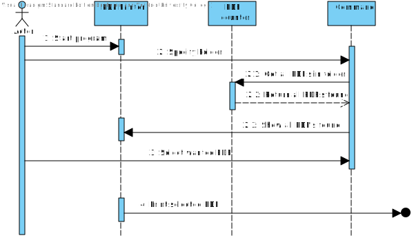
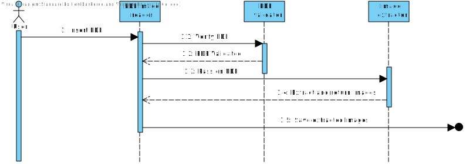
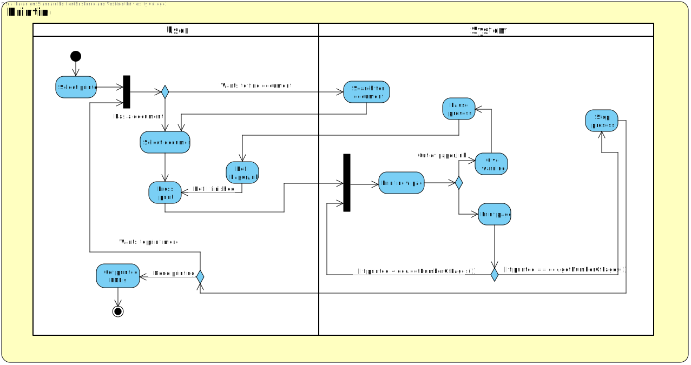

Innledning
PDFBox er et java library som kan brukes for å manipulere PDF filer, lage PDF filer, hente ut text, legge til bilder osv. Denne analysen av PDFBox har som formål å gi utviklere best mulig forståelse av hvordan de kan bruke dette biblioteket i sine programmer. Utviklere som tar i bruk denne analysen burde ha en god forståelse for hvordan UML og objektorientertanalyse fungerer.
Da PDFBox er et omfattende prosjekt har vi ikke analysert det hele, men heller valgt å gå inn på visse utvalgte detaljer ved biblioteket
PDFBox UseCase
Følgende UseCase-diagram illustrerer bruken av Biblioteket:
PDFBox Sekvensdiagram
Følgende Sekvensdiagram illustrerer printing av en valgt PDF fra en gitt mappe:
Sekvensdiagram illustrerer ekstratkering av en valgt PDF fil:
PDFBox aktivitetsdiagram
Følgende Sekvensdiagram illustrerer printing av en valgt PDF fra en gitt mappe:
